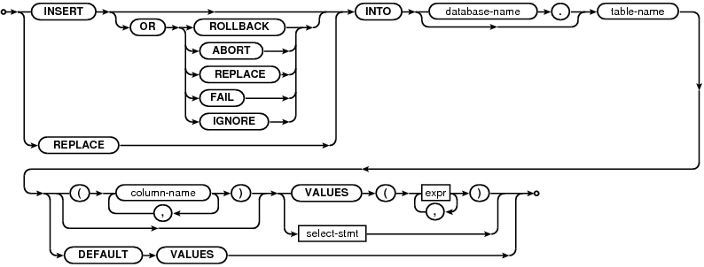

Choose any three.
|
|
SQL As Understood By SQLite
INSERT
insert-stmt:

The INSERT statement comes in three basic forms. The first form (with the "VALUES" keyword) creates a single new row in an existing table. If no column-list is specified then the number of values must be the same as the number of columns in the table. If a column-list is specified, then the number of values must match the number of specified columns. Columns of the table that do not appear in the column list are filled with the default value, or with NULL if no default value is specified.
The second form of the INSERT statement takes its data from a SELECT statement. The number of columns in the result of the SELECT must exactly match the number of columns in the table if no column list is specified, or it must match the number of columns named in the column list. A new entry is made in the table for every row of the SELECT result. The SELECT may be simple or compound.
The third form of an INSERT statement is with DEFAULT VALUES. The INSERT ... DEFAULT VALUES statement simply creates a single new row in the table in which each column is filled with its default value.
The optional conflict-clause allows the specification of an alternative constraint conflict resolution algorithm to use during this one INSERT command. See the section titled ON CONFLICT for additional information. For compatibility with MySQL, the parser allows the use of the single keyword REPLACE as an alias for "INSERT OR REPLACE".
The optional "database-name." prefix on the table-name is support for top-level INSERT statements only. The table name must be unqualified for INSERT statements that occur within CREATE TRIGGER statements. Similarly, the "DEFAULT VALUES" form of the INSERT statement is supported for top-level INSERT statements only and not for INSERT statements within triggers.